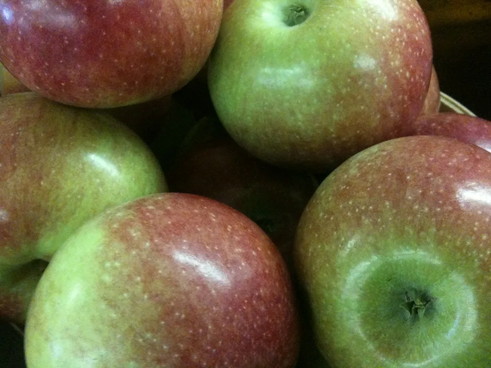

폭염에 추석 물가 비상…정부 "성수품 공급 충분" 진화 나서
농림축산식품부가 19일 정부세종청사에서 김종구 차관 주재로 '제5차 여름철 농축산물 수급안정대책반 회의'를 열고 다가오는 추석을 앞둔 성수품 수급 상황을 점검했다. 이 대책반은 올여름 이례적으로 길게 이어진 폭염과 가뭄에 대응하기 위해 꾸려진 범정부 협의체로, 그간 여러 차례 회의를 거듭하며 품목별 생육 상황과 피해 규모를 점검해 왔다. 이날 회의에서는 특히 올여름 이어진 기록적인 폭염과 가뭄으로 인한 농축산물 피해 현황과 작물 생육 상황이 집중적으로 논의됐다.
회의 결과 올해 사과 생산량은 48만5천200톤 수준으로 지난해보다 8.3% 늘어날 것으로 전망됐다. 배 생산량도 지난해보다 늘어날 것으로 예상되면서, 정부는 추석 성수품 수요가 몰리는 과일류의 공급 여건이 비교적 안정적일 것으로 내다봤다. 다만 폭염이 장기화하면서 품목별로 생육 편차가 나타날 수 있어, 정부는 현장 점검을 이어가겠다는 방침이다.

축산물의 경우 정부는 농협이 보유한 물량을 최대한 활용해 추석 성수기 출하량을 확보하는 한편, 신선란 수입도 확대해 계란 수급에 대응할 계획이라고 밝혔다. 최근 이어진 폭염으로 가축 폐사와 산란율 저하 우려가 커진 데 따른 조치로 풀이된다. 정부는 이와 함께 축산 농가에 대한 폭염 피해 예방 지침도 지속적으로 안내해, 추석 성수기 이후까지 축산물 수급이 흔들리지 않도록 관리한다는 방침이다.
앞서 지난 13일에는 해양수산부와 농림축산식품부가 '민생물가 특별관리 관계장관 태스크포스(TF)' 회의를 열고 광어·우럭·전복 등 폭염과 고수온 피해가 큰 취약 어종의 조기 출하를 유도하기로 했다. 정부는 300억원을 투입해 '대한민국 수산대전-고수온 특별전'을 통해 이들 품목을 시중가 대비 최대 50% 할인 판매하는 행사를 오는 23일까지 연장 운영하기로 했다.

정부는 이 같은 수급 안정 조치를 바탕으로 "추석 성수품 공급은 충분하다"는 입장을 밝히며 소비자들의 과도한 불안 심리를 진정시키는 데 주력하고 있다. 다만 올여름 폭염이 예년보다 길고 강했던 만큼, 일부 품목에서는 당분간 가격 변동성이 이어질 수 있다는 우려도 함께 제기된다.
앞서 정부는 여름 휴가철 장바구니 부담을 덜기 위해 라면·즉석식품·빙과류 등 가공식품 3천838개 품목을 대상으로 최대 57% 할인하는 행사도 함께 추진해 왔다. 이번 추석 국면에서도 이 같은 가공식품 할인 지원이 이어지거나 확대될지 관심이 모인다. 정부 관계자는 폭염·가뭄 여파가 큰 신선식품뿐 아니라 가공식품 물가도 함께 점검해 장바구니 부담을 다각도로 줄이겠다는 방침을 밝혔다.
정부의 공식 '추석 민생안정대책'은 오는 9월 초 발표될 예정이다. 이번 대책에는 성수품별 구체적인 공급 목표량과 할인 지원 규모, 전통시장·마트 등 유통 채널별 지원 방안 등이 담길 것으로 예상된다. 유통업계와 소비자단체 등은 이번 대책이 실제 장바구니 물가 안정으로 이어질지 주목하고 있으며, 정부는 대책 발표 이전까지 농축산물과 수산물 생육·어획 상황을 지속적으로 모니터링하며 필요한 경우 추가 조치를 검토한다는 계획이다. 올여름처럼 이상기후가 반복될 경우를 대비해 중장기적인 수급 관리 체계를 정비해야 한다는 지적도 함께 나온다.